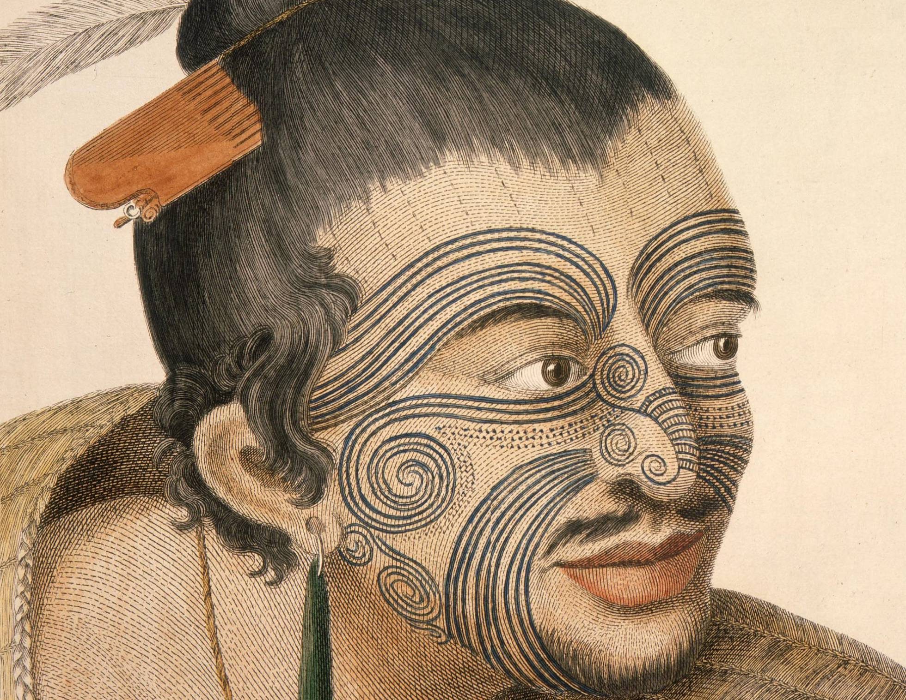

>> Noticias
¿Qué es ser una "Suicide Girl"?

Viaje al origen de los tatuajes maorís.
Kat Von D, la tatuadora más mediática.
Ed Sheeran y su obsesión por los tatuajes.
"Nunca copiaría un tatuaje aunque un cliente me lo pida"
Descubre a los hermanos Murray.
Veganos hasta el tatuaje.
Irezumi: Una historia de los tatuajes en Japón
¿Qué es ser una "Suicide Girl"?
Kat Von D, la tatuadora más mediática.